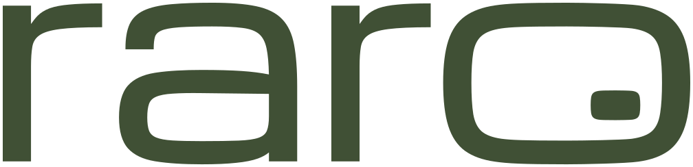
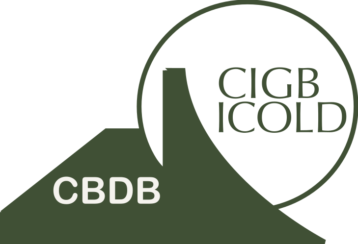
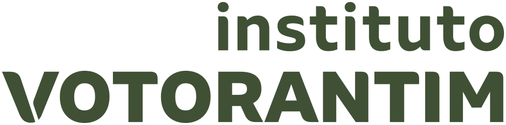
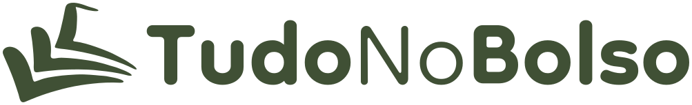
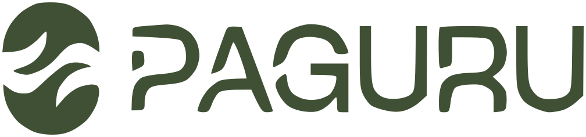
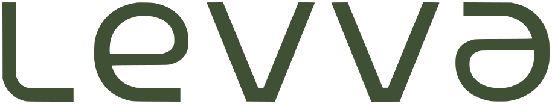

Gisele Borges
Há 6 anos crio experiências digitais funcionais e acessíveis para produtos B2B, B2C e sistemas internos.
XL Borges é a marca de design de Gisele: “xis-ele”, com o som do seu nome.


Projetos de product design
Problemas complexos transformados em produtos que as pessoas entendem e gostam de usar.
Synchro Pilot

Consistência em uma transição tecnológica
Estruturação da Jornada do FIDC
Problemas complexos, produtos simples de usar.
Vamos conversarSistema de vendas para maquininhas
Solução de PDV desenvolvida para rodar diretamente em maquininhas Android, centralizando pedidos e pagamentos em um único dispositivo.

App BASF Agro
O BASF Agro é o aplicativo da BASF para quem trabalha no campo, com informações técnicas sobre cultivos, pragas e produtos. Na ioasys, atuei no redesign do app.

Central de Monitoramento
Central de Monitoramento é um projeto de retrofit que estrutura a experiência visual e informacional de uma central de monitoramento.
Identidade visual e ilustração
Marcas com raiz, desenhadas do nome ao manual.
Doces da Anninha
Identidade visual para uma confeitaria artesanal de Juazeiro do Norte (CE): do diagnóstico do logotipo antigo à criação da mascote Anninha e do manual da marca.
Identidade XL Borges
A história da marca XL Borges, que é também a história deste portfólio: do nome ao símbolo, do Cariri às cores, de uma fonte construída do zero aos ícones que ganham movimento.
Identidade Saudion
A Saudion é um sistema para clínicas de saúde e consultórios. Criei a identidade visual e o manual que orienta o uso correto da marca.
Como eu trabalho
Cada projeto começa com escopo claro, passa por uma descoberta, é entregue por partes e termina com o time de desenvolvimento pronto para construir. Eu adapto cada etapa ao contexto: o produto pode já existir e precisar evoluir, ou ainda não existir e começar do zero.
Contexto e escopo
Entendo o problema, quem vai usar e em quais dispositivos. Se o produto já existe, parto do que está no ar; se é novo, parto da ideia e das hipóteses. Defino o que entra e o que fica de fora do design.
Descoberta
Se já existe um sistema, mapeio os fluxos atuais e as dores de quem o usa. Se não existe, pesquiso o problema, o mercado e as referências. Em ambos os casos, entrevisto e observo pessoas reais para embasar cada decisão de UX e UI.
Entregas e handover
Divido o design em entregas por área do produto. Cada tela passa por Backlog, A fazer, Fazendo, Em revisão e Pronto para desenvolvimento, com documentação clara para o time implementar sem dúvidas.
Acompanhamento do produto
Depois da entrega, acompanho o produto em uso. Se ele já existia, comparo antes e depois; se é novo, observo o primeiro uso. Testes de usabilidade, métricas e feedback dos usuários orientam os próximos ajustes.
O que dizem sobre o trabalho
“A Gisele é uma profissional que tem uma característica muito importante e muitas vezes não tão fáceis de encontrar, é uma pessoa propositiva, analítica e muito empática,
Ler mais +
características latentes em suas interações profissionais e na condução de seus projetos. Sempre está disposto a ajudar e se preocupa genuinamente com o próximo. Foi um prazer trabalhar com ela e tenho certeza de que fará uma grande contribuição em qualquer equipe que esteja inserida.”
“Gisele possui habilidades incríveis, é uma profissional super dedicada, responsável, proativa e carismática. Em todos os projetos em que passou entregou carinho, paciência e muito embasamento na experiência do usuário.
Ler mais +
Gisele está sempre a procura de evoluir suas entregas e aprender, seja trocando experiências com pessoas da equipe, estudando e ensinando colegas. Foi maravilhoso tê-la na equipe, agradeço demais a oportunidade de trabalhar com ela e poder fazer parte de sua evolução. Espero que em breve possamos trabalhar juntas novamente.”
“Gisele é a pessoa mais calma, paciente e organizada. Acompanhei ela em um projeto na empresa e vi o desempenho dela em entregar o melhor produto possível para o cliente!”
“É maravilhoso ver sua trajetória e ver tanta potência, dedicação e luz em tudo que sempre fez. Tenho certeza que o time de DS virou outro pós a sua chegada!
Ler mais +
[…] Com oportunidade e apoio você demonstrou o quanto tinha potencial e de fato virou protagonista nos temas que atuou.”
“Quantas vezes eu te chamei pra pedir ajuda com algum componente ou pra pedir sua opinião, e todas essas vezes você se mostrou disposta e com domínio sobre o assunto. Você é uma profissional extremamente dedicada e competente, e que vai longe!”
Empresas que já atendi








Sobre mim
Sou Product Designer Pleno e há 6 anos crio experiências digitais funcionais e acessíveis para produtos B2B, B2C e sistemas internos.
Trabalho com UX/UI, product discovery, design systems e pesquisa com usuários. Também faço identidade visual e ilustração para projetos sob demanda.

© 2026 XL Borges. Todos os direitos reservados · CNPJ 67.998.140/0001-71